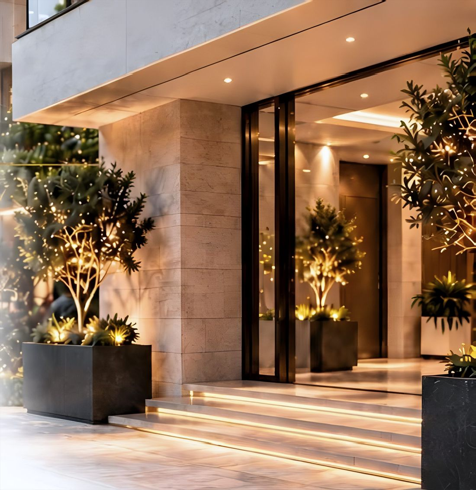
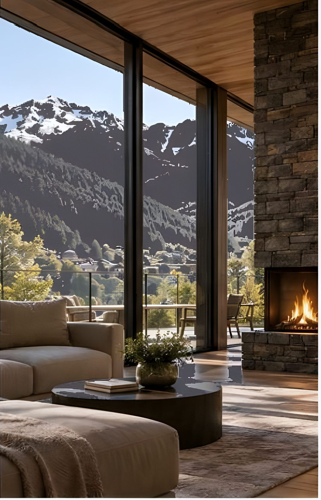
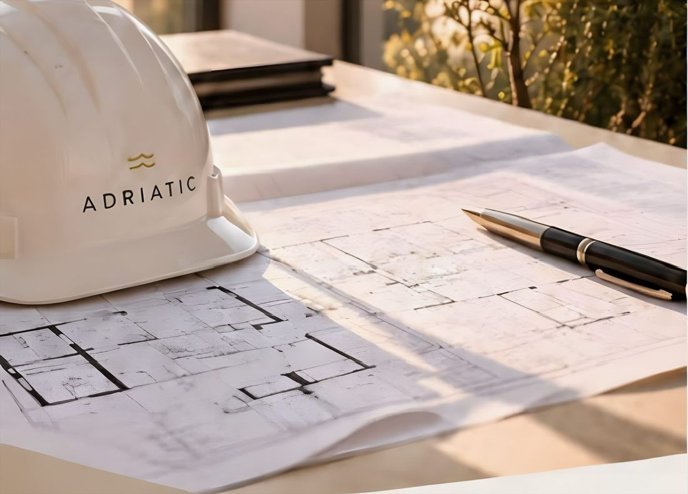
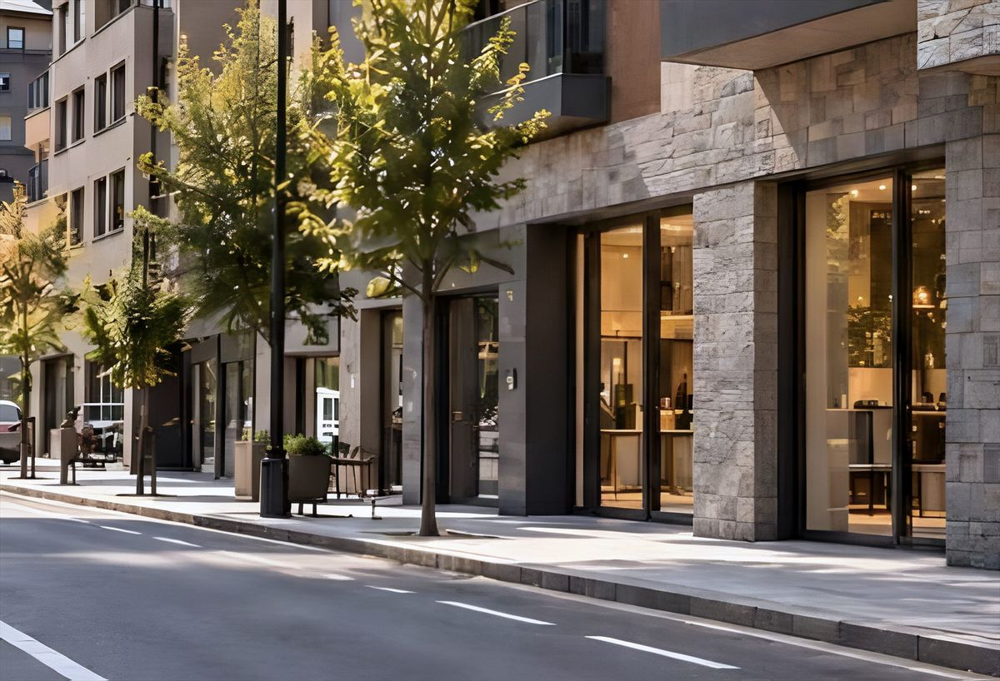

Gestió immobiliària integral
Adriatic Real Estate ofereix serveis immobiliaris a mida: administració integral de comunitats, gestió de patrimonis immobiliaris, catàleg de serveis als residents i agència immobiliària.
La teva comunitat, en bones mans
Un model de gestió proper, eficient i transparent, amb el suport d'un equip especialitzat i els millors professionals. Ens encarreguem del dia a dia perquè la comunitat funcioni amb total tranquil·litat.

01Constitució de la comunitat
- Revisió de la divisió horitzontal i dels estatuts
- Constitució de la comunitat i acta inicial
- Obertura del compte bancari i llibre d'actes
- Contractació de serveis i subministraments
- Pressupost inicial de funcionament
02Control de la despesa
- Gestió administrativa i comptable
- Comprovació i distribució de despeses i saldos
- Pressupost anual, quotes i control de morositat
- Estudi d'estalvi i gestió de subministraments
- Lectura de comptadors i càlcul de consums
03Juntes de propietaris
- Convocatòria de juntes
- Confecció i enviament de les actes
- Juntes conduïdes per personal titulat AGIA
- Sala de juntes
04Manteniment i conservació
- Visites periòdiques a l'edifici
- Inspeccions i revisions comunitàries
- Sol·licitud i comparativa de pressupostos
- Seguiment de les tasques dels industrials
- Gestió de subvencions
05Tramitació d'assegurances
- Negociació de pressupostos
- Comparatius de prestacions
- Obertura i seguiment de sinistres
- Actualització de cobertures
06Assessorament jurídic i laboral
- Mediació i arbitratge
- Custòdia de documentació
- Reglamentacions i normatives
- Protecció de dades
- Riscos laborals
07Coordinació del servei de porteria
- Captació i formació d'un equip a l'altura de l'edifici
- Seguiment i reporting continu de les tasques
- Gestió d'horaris adaptada a la comunitat
- Inclosa en els honoraris d'administració. El cost salarial del personal és a càrrec de la comunitat.
08Tramitació de sinistres
- Obertura de sinistres
- Comunicació contínua amb la companyia d'assegurances
- Seguiment fins a la resolució del sinistre
- Protocols d'emergència i atenció d'urgències 24/365
09App de comunicació
- Despeses, comptes i pressupostos sempre actualitzats
- Històric documental i repositori d'actes
- Comunicació d'incidències
- Tauler d'anuncis virtual i contacte directe amb Adriatic
Rendibilitat sense preocupacions
Gestió contínua, informació clara i una resposta ràpida perquè el propietari obtingui rendibilitat sense haver-se de preocupar pel dia a dia.

01Incidències i coordinació d'industrials
- Interlocutor únic per a arrendatari, industrials i asseguradores
- Obertura i seguiment de cada incidència
- Coordinació amb industrials i asseguradores
- Sol·licitud i comparativa de pressupostos
- Seguiment i reporting dels sinistres
- Informe al propietari de cada actuació
02Liquidació d'ingressos
- Liquidació mensual de rendes a la propietat
- Liquidació mensual o trimestral, segons la necessitat de cada propietari
- Liquidació fiscal per a propietaris no residents
- Liquidació i presentació de l'impost d'inquilinat
03Altres serveis
- Servei d'urgències i informació en temps real a l'App
- Reparació i reposició del mobiliari
- Serveis de neteja i manteniment
- Accés del propietari a tota la informació a través de l'App
Una transició ordenada, des del primer dia
Acompanyem la promotora en tot el procés, des de la comercialització fins a la posada en marxa de la comunitat.

- Fase de comercialitzacióAssessorament a la promotora en la definició de les necessitats de la futura comunitat i en la comunicació amb els compradors.
- Fase de final d'obraRevisió de les instal·lacions i zones comunes, identificació d'incidències i coordinació amb la promotora per garantir que tot estigui llest per al lliurament.
- Fase de lliuramentSuport en la comunicació amb els propietaris i en l'organització de la documentació necessària per a la constitució de la comunitat.
- Fase de constitució i posada en marxa de la comunitatConstitució de la comunitat, gestió de l'alta de subministraments i inici de l'administració, amb totes les eines i serveis d'Adriatic.
Revisió de final d'obra
Una revisió completa de l'edifici perquè tot estigui llest per al lliurament, amb un enfocament pràctic, rigorós i orientat a la qualitat.
- Revisió documental
- Inspecció a l'edifici
- Informe d'incidències
- Seguiment de resolució
- Validació final
Un canvi tranquil, amb resultats des del primer dia
T'acompanyem en el procés de canvi d'administrador perquè la teva comunitat guanyi en transparència, eficiència i tranquil·litat, sense complicacions i amb total continuïtat del servei.

- Fase d'anàlisi i propostaConeixem la vostra comunitat, revisem la situació actual i us presentem una proposta clara i personalitzada amb les millores i oportunitats de gestió.
- Fase de transicióEns encarreguem de tota la documentació, la coordinació amb l'administrador sortint i el traspàs ordenat, garantint la continuïtat del servei sense interrupcions.
- Fase de posada al diaRevisem i actualitzem la comptabilitat, els proveïdors, els contractes i tota la documentació administrativa i legal de la comunitat.
- Fase de gestió continuadaIniciem la gestió diària amb un equip especialitzat, eines digitals i una comunicació propera i transparent, per oferir-vos un servei eficient i de confiança a llarg termini.
Tot el que vols saber
Els dubtes més habituals de propietaris i comunitats abans de treballar amb Adriatic.
01Adriatic ven propietats?
El nostre focus és la gestió i el manteniment del patrimoni. També acompanyem operacions de compravenda i lloguer quan el client ho necessita, però el que ens defineix és cuidar la propietat a llarg termini.
02I el meu administrador actual?
Ens encarreguem del traspàs complet, sense que hagis de gestionar el canvi. Recollim la documentació i els comptes i donem continuïtat des del primer dia.
03Què inclou la gestió d'una comunitat?
Constitució de la comunitat, pressupostos, control de despesa, juntes de propietaris, assessorament jurídic i laboral, manteniment i conservació, tramitació de sinistres i una app de comunicació.
04On sou?
La nostra oficina és a l'Avd. Verge de Canolich, 27, AD600 Sant Julià de Lòria (Andorra).
05Sou agents titulats?
Sí. Comptem amb agents immobiliaris titulats (AGIA) i les juntes les condueix personal titulat AGIA.
06Com començo?
Truca'ns al +376 841 301, escriu-nos a info@adriatic.immo o omple el formulari de contacte i et respondrem al més aviat possible.